Esta página complementa o artigo de Trabalho de Conclusão de Curso. Ela reúne as telas do sistema desenvolvido e do painel do Mercado Livre usadas na comparação da Seção 4 do artigo, a descrição de cada funcionalidade e a íntegra dos relatos das empresas usuárias. O mesmo conteúdo está disponível em PDF.
Para preservar o anonimato das empresas participantes, os elementos que poderiam identificá-las foram cobertos com retângulos cinza: nome da loja e da conta, fornecedores, marcas, títulos, fotos, SKUs e códigos de anúncios, além de totais de faturamento. Nenhum dado pessoal de comprador é apresentado. As empresas são denominadas Empresa A, Empresa B e Empresa C. Clique em qualquer tela para vê-la em tamanho original.
O sistema é uma aplicação web com backend em Node.js e frontend em React, integrada à API do Mercado Livre e à API do Bling, o sistema de gestão empresarial (ERP) utilizado pelas empresas. O ERP é a fonte do estoque, dos produtos e dos fornecedores; o Mercado Livre é a fonte dos anúncios, pedidos, promoções e publicidade. O cruzamento dessas duas fontes é o que permite os diagnósticos descritos a seguir.
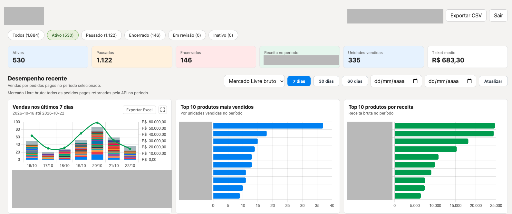
No painel do Mercado Livre, o vendedor consulta o estoque de cada anúncio e, em relatórios separados, as vendas realizadas. A decisão de quando e quanto repor depende de cruzar essas informações manualmente, sem considerar o estoque do ERP, o prazo de entrega do fornecedor nem a quantidade mínima de compra.
A aba de Recompras faz esse cruzamento por SKU e por fornecedor. O estoque vem do ERP e as vendas, do histórico de pedidos. O sistema calcula duas sugestões de compra para cada produto: uma pela média ponderada das vendas dos últimos seis meses completos, com peso maior para os meses mais recentes, e outra pela velocidade de venda dos últimos 15 dias. Ambas consideram o prazo de entrega, o ciclo de compra e o lote mínimo do fornecedor. Cada produto é classificado como urgente, atenção ou adequado. Quando o ritmo recente supera a média semestral, a sugestão de curto prazo cresce antes de o estoque acabar.
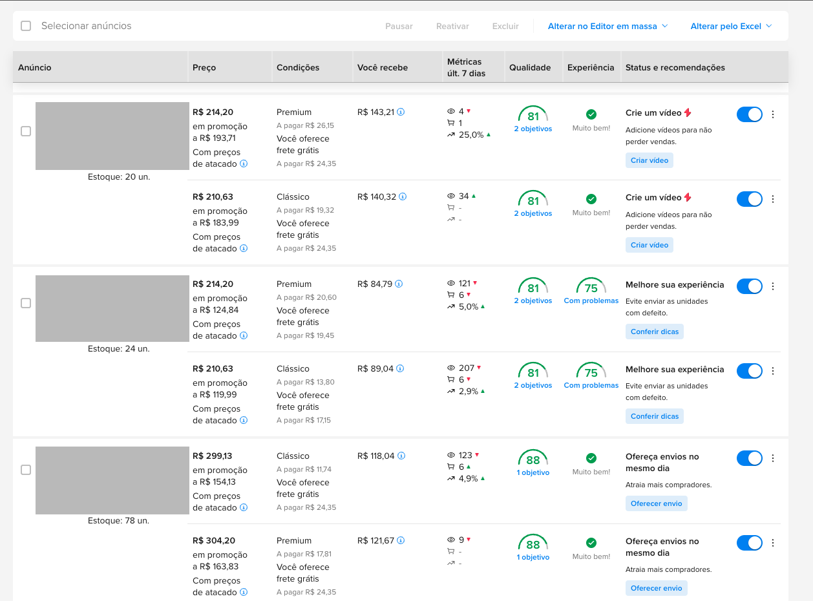
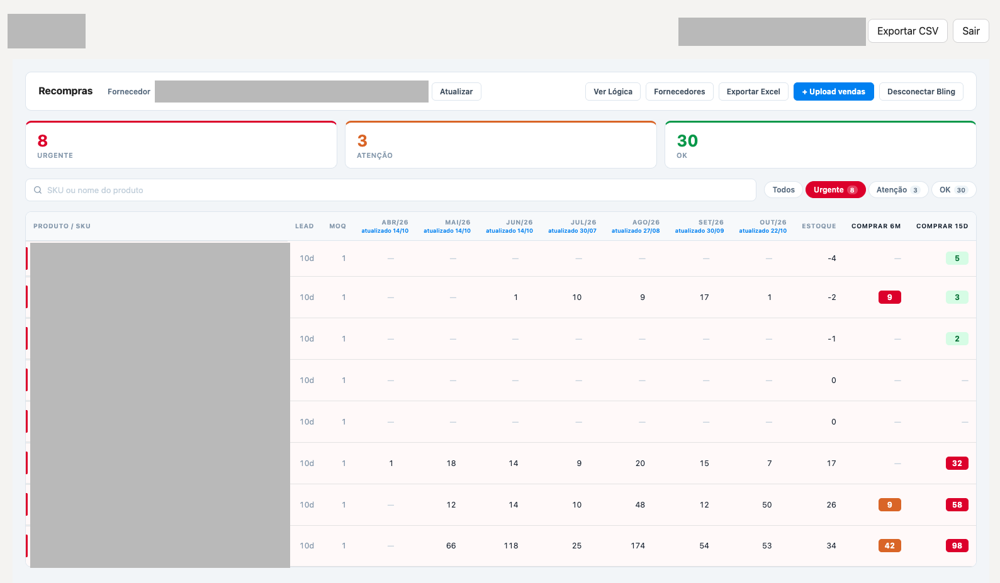
No painel do Mercado Livre, o estoque de cada anúncio é exibido sem referência ao estoque registrado no ERP. A aba de Estoque consulta os anúncios da conta, obtém o SKU e a quantidade de cada um, busca os mesmos SKUs no ERP e classifica cada anúncio como conferido, divergente, não encontrado no ERP ou sem SKU. A conferência manual passa a ser uma lista de exceções.
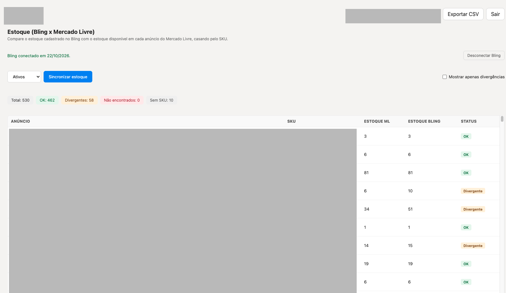
A aba de Sugestão de Compra calcula quanto comprar de cada fornecedor para repor o estoque. A velocidade de venda de cada produto desconsidera os dias em que ele esteve sem estoque, e o ponto de pedido e o estoque-alvo são definidos pelo prazo de entrega, pelos dias de segurança e pela cobertura desejada. Os kits vendidos nos anúncios são decompostos nas peças que os compõem, de modo que a venda de um kit gera demanda para cada componente. O resultado pode ser filtrado por fornecedor e exportado em planilha. O painel do Mercado Livre não oferece recurso equivalente.
O detalhe da venda no Mercado Livre apresenta preço, tarifa de venda e custo de envio, mas não o custo do produto, os impostos e os custos operacionais. O Painel de Lucro combina os pedidos pagos do período com a tarifa e o frete cotados pela API e com os custos cadastrados pelo vendedor por SKU, mostrando o lucro por unidade e por anúncio e destacando os produtos com margem negativa. Tarifa e frete são cotações da API, e não os valores efetivamente cobrados em cada pedido.
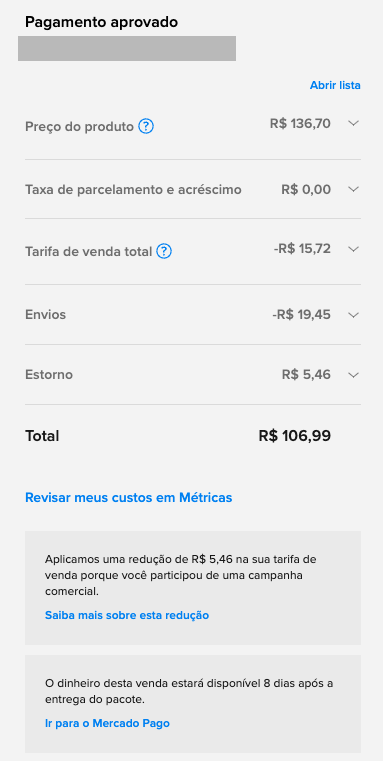
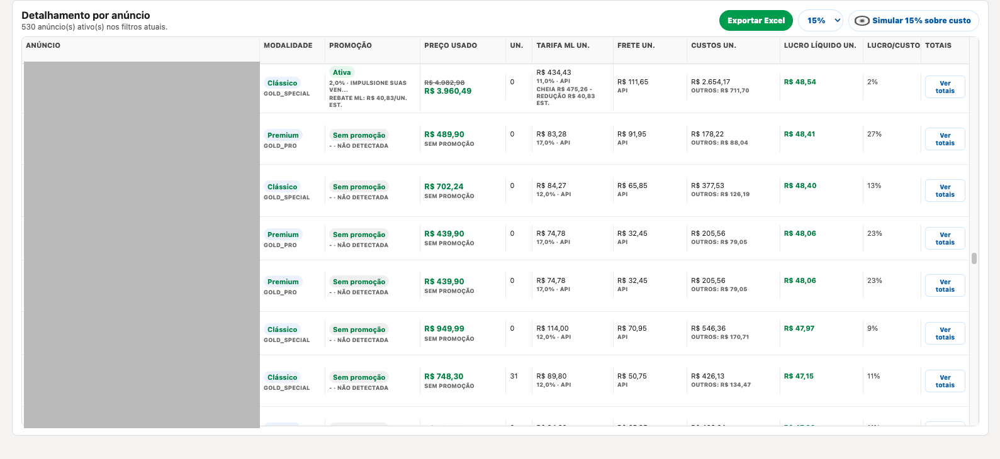
Na central de promoções do Mercado Livre, o vendedor vê o preço promocional e o valor que receberá, mas não a margem. A Central de Promoções do sistema calcula, para cada promoção disponível ou ativa, a tarifa ao preço promocional, o frete, a redução de tarifa estimada quando o Mercado Livre cofinancia o desconto e a margem após custo e impostos. Promoções com cofinanciamento e margem acima do mínimo definido pelo vendedor são sinalizadas como oportunidades, e promoções ativas com margem negativa geram alerta. A adesão continua sendo feita no painel do Mercado Livre.
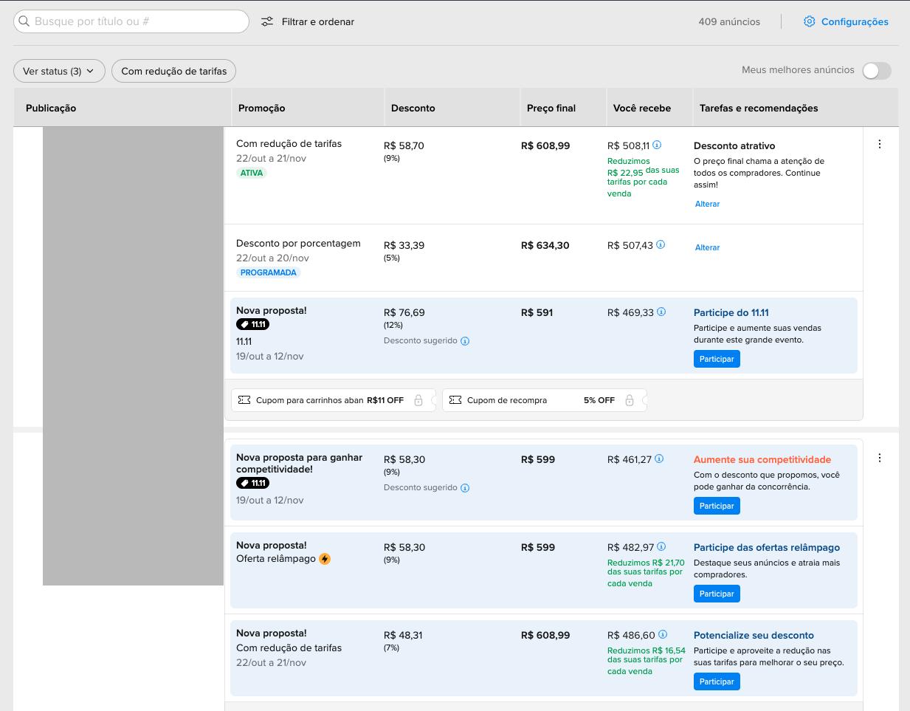
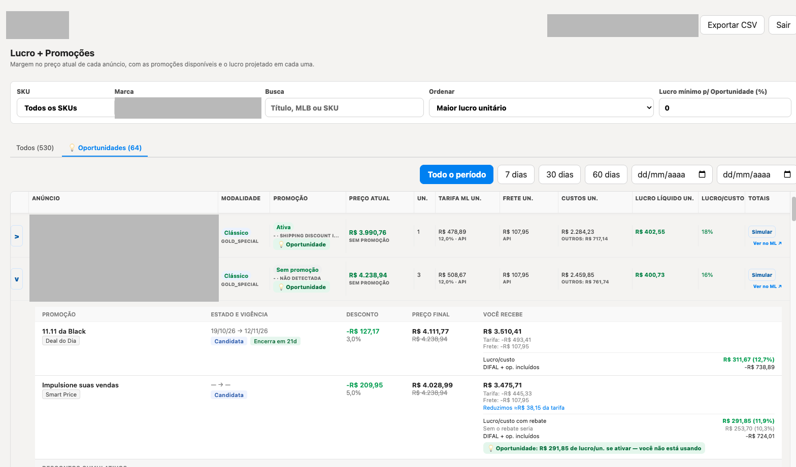
O Mercado Ads apresenta métricas por campanha. O Painel de Publicidade consulta as mesmas métricas pela API e as organiza por anúncio, em janelas de 3, 7, 15 ou 30 dias, com três indicadores: ACOS (Advertising Cost of Sales), o investimento em anúncios dividido pela receita gerada por eles; ROAS (Return on Ad Spend), a receita gerada por real investido; e TACOS (Total Advertising Cost of Sales), o investimento em anúncios dividido pela receita total do vendedor. Anúncios com gasto e sem vendas são sinalizados. O sistema não altera campanhas nem lances.
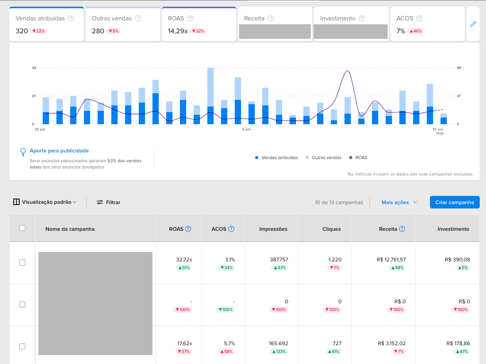
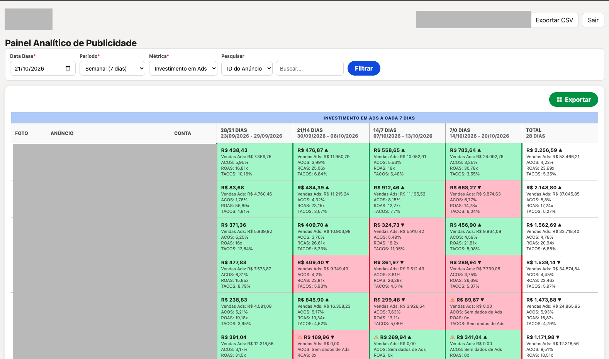
No painel do Mercado Livre, o preço é alterado anúncio por anúncio ou por planilha de edição em massa, que precisa ser baixada, editada e reenviada. A aba de Preços em Massa permite buscar uma linha de produtos por título, SKU, marca ou modelo, aplicar um percentual ou valor fixo de aumento ou redução, desmarcar os anúncios que não devem mudar e revisar o novo preço antes de enviar. O sistema pede confirmação, atualiza também as variações e registra cada alteração em um histórico.
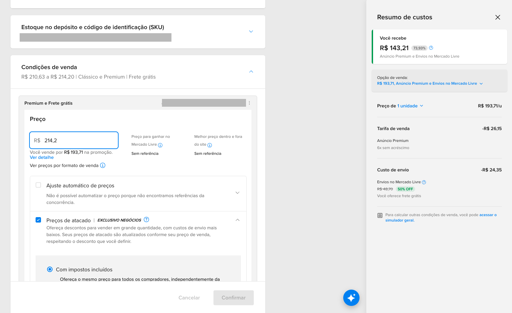
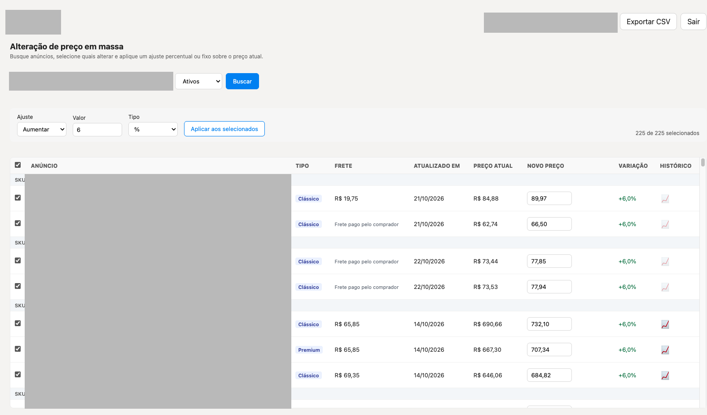
O painel do Mercado Livre não oferece a cópia de anúncios entre contas distintas. A aba de Clonagem permite escolher a conta de origem e a de destino entre as contas autorizadas, selecionar os anúncios, revisar preço e tipo de anúncio e publicar no destino. A conta de origem é acessada apenas para leitura, e o sistema pede confirmação e valida cada anúncio na API antes de publicar.
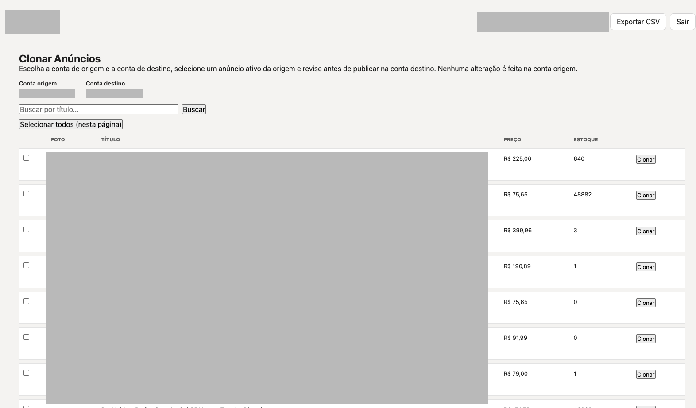
A extensão para o Google Chrome funciona na página de promoções do próprio Mercado Livre. Ela lê o valor que o vendedor receberá em cada promoção, desconta o custo do produto e as alíquotas cadastradas no sistema e exibe o lucro estimado ao lado do preço final.
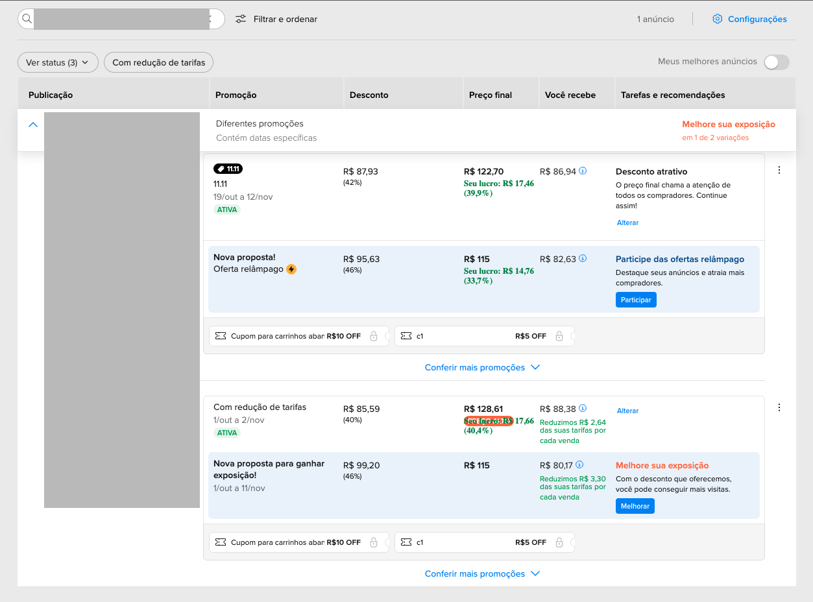
Os relatos foram solicitados por mensagem de WhatsApp, com a concordância dos responsáveis para publicação sem identificação. Os textos foram mantidos como enviados, exceto pela supressão de elementos que poderiam identificar as empresas, indicada entre colchetes.
Empresa A “Antes do sistema, a reposição era feita no ‘olhômetro’, com uma planilha que ninguém atualizava direito. A aba de Recompras mudou isso. Ela cruza o ritmo de vendas dos últimos 6 meses com o dos últimos 15 dias, e assim conseguimos ver quais peças estão acelerando antes de faltarem. Os furos de estoque em itens de giro alto [exemplos de produtos suprimidos para preservar o anonimato] caíram bastante, e paramos de perder posição nos anúncios por ficar sem estoque. A aba de Estoque, que compara o Mercado Livre com o Bling por SKU, também ajudou muito. Achamos vários anúncios com estoque diferente do ERP, que antes só descobríamos quando o cliente comprava e não tinha o produto. Hoje a conferência que levava uma tarde inteira sai em poucos minutos. A Sugestão de Compra já separa os kits nos componentes e agrupa por fornecedor, então o pedido praticamente sai pronto.”
Empresa B “Nosso maior problema era a margem. Vendíamos bastante, mas no fim do mês sobrava pouco e não sabíamos onde estava o vazamento. O Painel de Lucro mostrou o resultado real de cada venda, já descontando tarifa, frete e imposto, e descobrimos produtos que davam prejuízo sem a gente perceber. A Central de Promoções foi o que mais trouxe retorno. Antes recusávamos quase todas as campanhas do Mercado Livre por medo de vender abaixo do custo. Agora vemos a margem de cada promoção antes de aceitar, e várias têm redução de tarifa que compensa o desconto. Passamos a entrar em muito mais campanhas com segurança, e as vendas subiram nesses períodos. O Painel de Publicidade nos fez cortar campanhas de Ads que gastavam muito e quase não convertiam, e colocar o dinheiro nos anúncios que realmente vendiam.”
Empresa C “Com tantas variações de tamanho e cor, mexer em preço era um pesadelo. A aba de Preços em Massa resolveu isso: quando o fornecedor reajusta, aplicamos o percentual numa linha inteira e excluímos os modelos que não devem mudar. O que levava horas, anúncio por anúncio, hoje leva minutos e sem erro de digitação. A clonagem de anúncios entre contas foi decisiva quando abrimos a segunda conta. Copiamos os anúncios da conta principal sem nenhum risco para os originais, e o sistema sempre pede confirmação antes de publicar. Economizamos semanas de cadastro manual. A extensão do Chrome também virou rotina da equipe. Enquanto navegamos no próprio Mercado Livre, ela já mostra a margem e o cálculo do anúncio, sem precisar abrir outra ferramenta.”